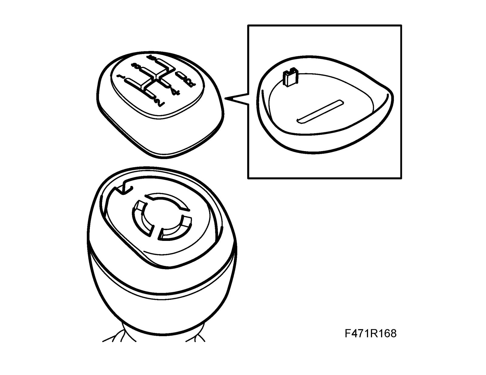
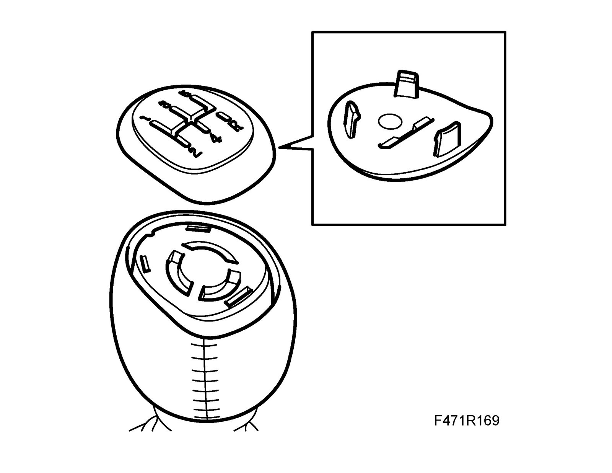
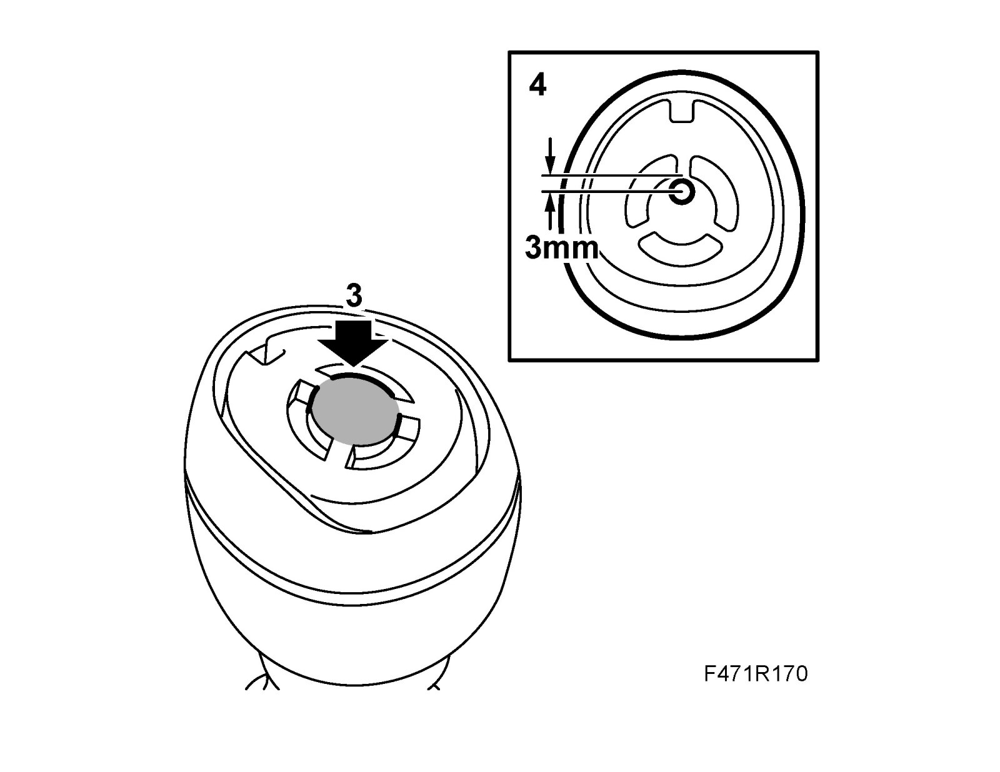
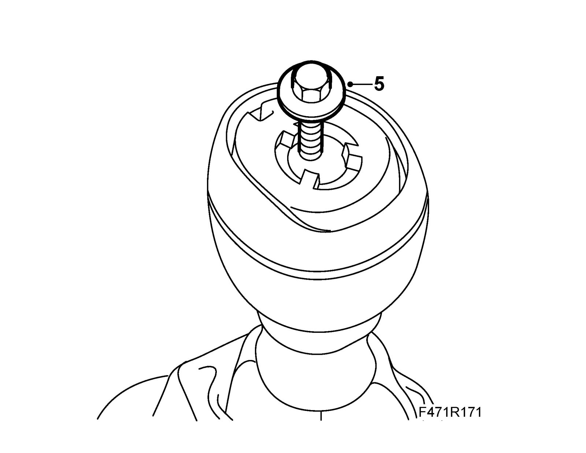
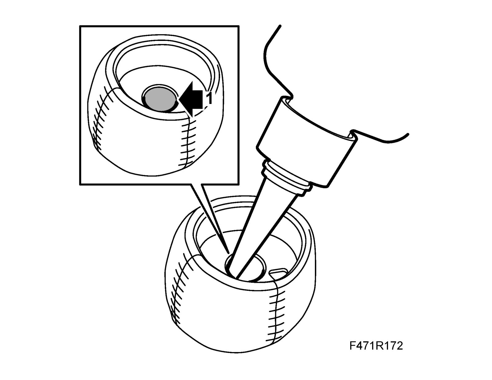
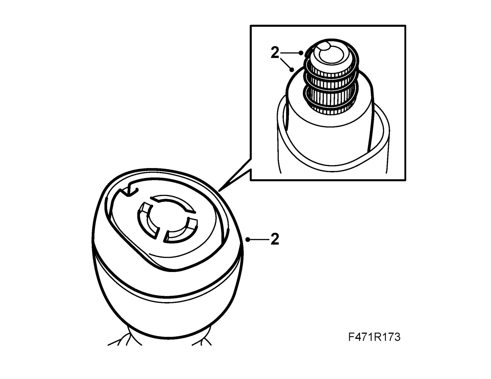

Replacing Gear Lever Knob
Replacing gear lever knobTo remove
1. Cover the ignition switch and the area surrounding the gear lever with a cloth or the like.
2. Use a screwdriver to remove the emblem.
Note
The emblem varies for rubber or leather knobs.


3. Cut away the rubber protector in the center.

4. Mark and drill a 4 mm hole 5 mm deep into the knob, 3 mm from the edge as illustrated.
Warning
Wear protective glasses.
5. Pull of the knob by screwing in a self-threading plate screw with flat tip (25 x 5.5 mm) into the hole.

To fit
1. Apply glue on the knob as illustrated. Use Thread locking adhesive, Loctite 270.

2. Fit the knob to the gear lever. Make sure the spring and foam ring are correctly situated.

3. Fit the emblem on the gear lever knob. Do not operate the lever until the adhesive has dried (approx. 30 min).


4. Remove the covering and vacuum up any swarf or the like.